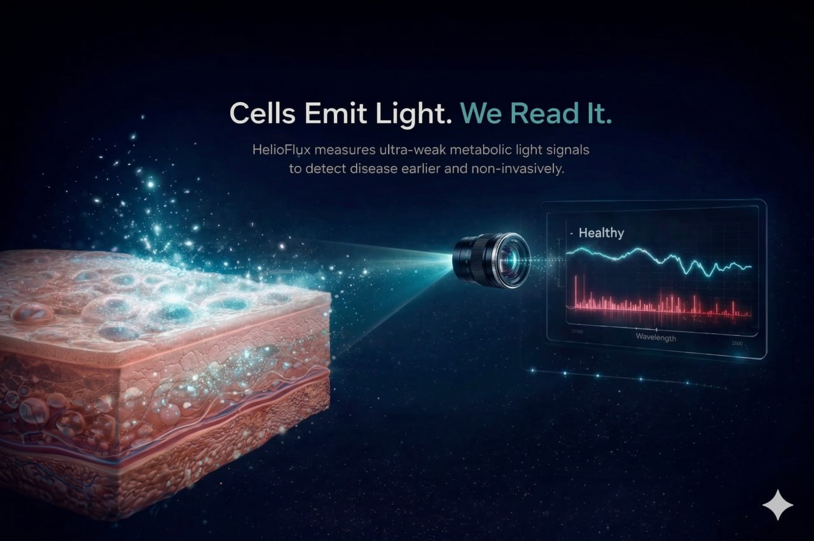

The Science
Every living cell emits light. Cancer changes the pattern. HelioFlux reads that change at 5-10 million cells, long before imaging, blood tests, or symptoms.

The Physics
Ultra-weak photon emissions (UPEs) are a byproduct of oxidative metabolism — the chemical reactions that power every cell. They are real, measurable, and carry information about the cell's internal state. Healthy cells produce a characteristic emission profile. Cancer cells do not.
The difference lies in the spectral shape, not brightness. Malignant cells emit photons at shifted wavelengths, with a frequency signature around ~20Hz that does not appear in healthy tissue. This signature was discovered by Dr. Nirosha Murugan across a decade of peer-reviewed research.
LuminAI applies spectral power density (SPD) analysis to extract this fingerprint from raw photon data. The result is a biomarker classification — malignant or not — grounded in physics, not symptoms, imaging, or blood chemistry.
Detection Threshold
A tumor at 5-10 million cells is about 2 millimeters across. Too small to feel. Invisible on a scan. By the time it reaches 1 billion cells, roughly a centimeter, medicine can finally see it. That growth took 1.5 to 2 years. HelioFlux is built to find it first.
Our Pilot
Every year, millions of patients leave a dermatologist's office with an unanswered question: is this mole dangerous? The doctor has two options. Cut it out and send it to a lab, or say "let's watch it." Most biopsies come back benign. The ones that don't sometimes come back too late.
HelioFlux gives clinicians a third option. A 15-minute scan reads the photon signature of a suspicious lesion and returns a result in the office. No cutting. No waiting. No guessing.
Skin is where we start because the clinical pathway is clear: the dermatologist already has the patient, already suspects something, and already faces a binary decision. HelioFlux plugs into that moment without changing the workflow.
Once we validate the technology on melanoma, the same platform expands. Brain cancer. Breast cancer. Eventually, a full-body scan that reads every tissue type at once.
Preclinical Evidence
In 2020, Dr. Murugan's lab published results from 47 live animal models injected with melanoma cells. Whole-body photon emissions detected the cancer within 24 hours of injection — 18 days before tumors were physically detectable. Final discriminant accuracy: 90%.
This is the in vivo foundation for HelioFlux's human skin pilot. Same detection principle. Same spectral signature. Now built into a clinical-grade device.
Read the study (Murugan et al., 2020) →For the Curious
QSense captures raw photon emission data at single-photon sensitivity. LuminAI then runs spectral power density analysis, decomposing the signal by wavelength and frequency to extract the emission fingerprint.
The AI compares that fingerprint against a validated database of cancer and healthy-tissue signatures, built from three peer-reviewed studies across 13 cancer cell lines and 47 living animal models. The output: a biomarker classification with a confidence score. Powered by NVIDIA computing infrastructure.
A HelioFlux scan takes approximately 15 minutes. The patient sits comfortably while QSense reads photon emissions from the target area. No needles. No contrast agents. No ionizing radiation. No preparation required.
LuminAI processes the data in real time. The clinician receives a biomarker classification during the same visit, not weeks later. For patients, it feels closer to having your temperature taken than getting a biopsy.
Standard imaging (CT, MRI, mammography) requires roughly 1 billion cells before it can detect a tumor. By that point, cancer has been growing silently for years.
Only breast, cervical, colorectal, lung, and prostate cancers have USPSTF-recommended screening. Over 200 types have none. High costs ($10K+ out-of-pocket for multi-cancer panels) delay or prevent screening, especially in underserved communities.
For cancers like ovarian and pancreatic, the average time from symptom to diagnosis exceeds six months. HelioFlux is designed to change that math entirely.
Published Research